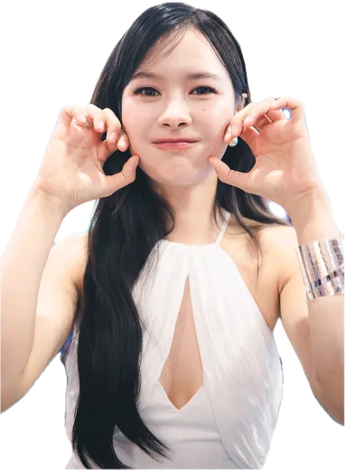
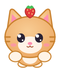
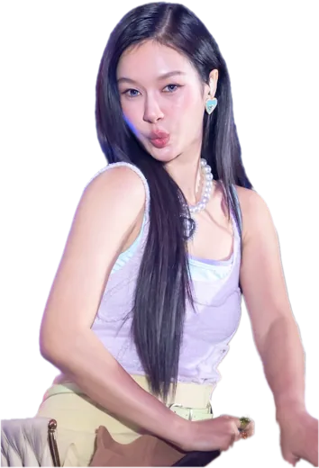
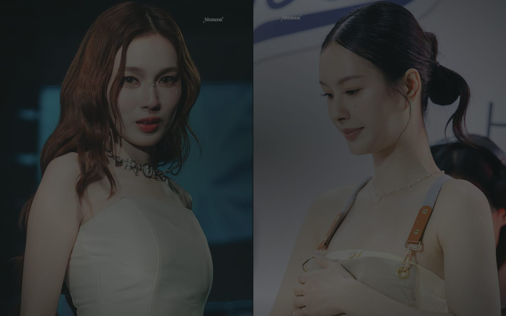
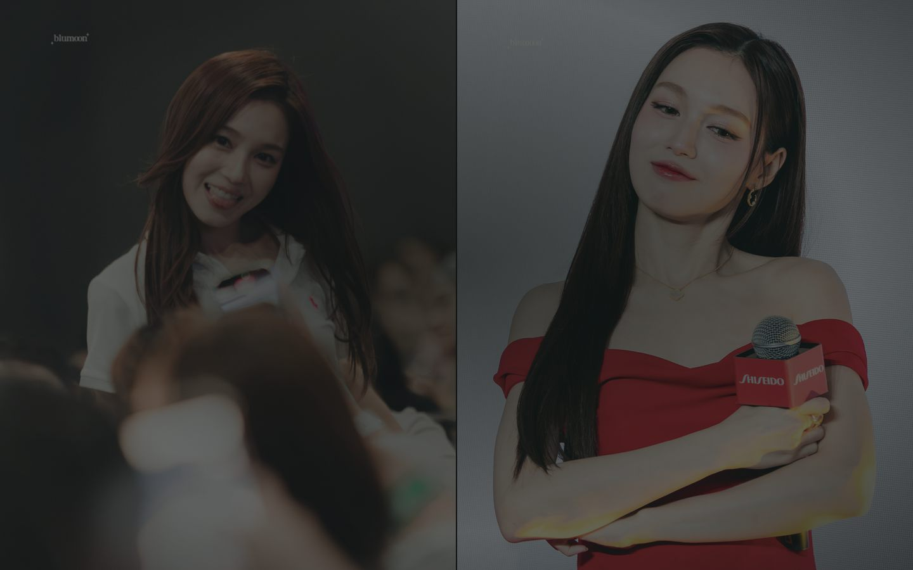
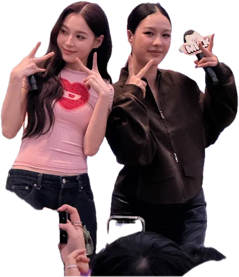
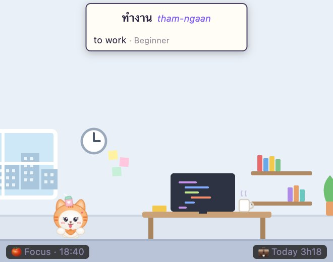
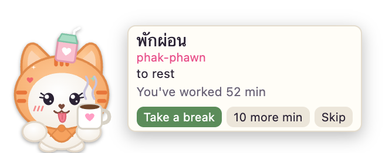
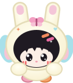

18:42round 2 of 4Mac app · Windows coming
ML WorkHelp
A MilkLove buddy for your whole work day: a work clock or the Pomodoro, a focus screen, reminders, stickers from your own photos, and your weeks in numbers.
One is a Mac app with Milk & Love that keeps you company all day. The other is an extension inside VS Code, with popular Thai mascots, for while you code. Each works on its own.

18:42round 2 of 4A MilkLove buddy for your whole work day: a work clock or the Pomodoro, a focus screen, reminders, stickers from your own photos, and your weeks in numbers.
// today: learn one Thai word const word = "ทำงาน"; // to work function takeBreak() { … }

Not an app: an extension you add to VS Code. A popular Thai mascot walks round your editor, teaches you Thai words, keeps your Pomodoro and reminds you to rest.
Stickers on this page are made from photos by Blumoon, Lyrac, NGMin and otter (used with permission) and by alitasdepollos; cartoon Muv drawings by หวานเจี๊ยบอุนยายม๋าไก่ (@wanwannjeab).
Tap the one that sounds most like you.
| ML WorkHelp | Thai Mascot Buddy | |
|---|---|---|
| What it is | An app you download and open on its own | An extension that runs inside VS Code, while VS Code is open |
| How you get it | Download it from this page | VS Code Marketplace, in one click (Kiro version in review) |
| Buddies | Milk & Love on your desktop, stickers from your own photos | Popular Thai mascots and animals round your editor |
| Keeping time | Work clock, Pomodoro, focus screen | Work time and Pomodoro in the status bar |
| Reminders | Reminders and events, with Apple sync | Simple reminders and break pop-ups |
| Calendar & data | Summary, analysis, editable calendar | Not included |
| Looks | 8 styles, 6 colour themes, light and dark | Cartoon or pixel mascots |
ML WorkHelp and Thai Mascot Buddy are free, unofficial fan projects, made with love for MilkLove and Thai GL fans.
No price, no ads, no account.
Not made by or connected with GMMTV, Channel 3, LingLing Kwong, Milk or Love.
Every photo is credited to its photographer, and the mascots to their owners. To fix a credit or have something removed, write to us.
A work clock or the Pomodoro, a focus screen, reminders and events, stickers from your own photos, and your week, month and year in numbers, with Milk and Love keeping you company on screen.

Stickers on this page are made from photos by Blumoon, Lyrac, NGMin and otter (used with permission) and by alitasdepollos; cartoon Muv drawings by หวานเจี๊ยบอุนยายม๋าไก่ (@wanwannjeab).
This is a real, clickable preview. Pick a page, change the style, switch light or dark, just like Settings › Look in the app.
Stickers in this preview are made from photos by Blumoon, otter, NGMin and Lyrac, used with permission; cartoon Muv drawings by หวานเจี๊ยบอุนยายม๋าไก่ (@wanwannjeab). Break-video thumbnails are from GMMTV OFFICIAL on YouTube.
Reading, studying on paper, drawing? The clock fills the screen, and sitting still isn't counted as away. Try it here: change what's behind the clock and how it looks, just like in the app.


Photos in this preview: Blumoon (@blumoonfoto), used with permission. The walking stickers are made from photos by alitasdepollos (@alitasdepollos0).
Your stickers walk on your desktop, show up on the focus screen, and celebrate with you when you're done for the day.

Example photos and stickers by alitasdepollos (@alitasdepollos0), touched up in the app.
Please respect the photographers. Only add photos you took yourself or have permission to use. Your stickers stay on your computer; the app never uploads or shares them. Stickers made in the app can only be used in the app.
Stickers on this page are made from photos by Blumoon, Lyrac, NGMin and otter (used with permission) and by alitasdepollos; cartoon Muv drawings by หวานเจี๊ยบอุนยายม๋าไก่ (@wanwannjeab).
Pick one of eight styles, and then:
Not sure which? Apple menu › About This Mac, and look at "Chip". Windows is coming.
You may need to allow it again after each update. The app checks for a new version once a day by reading a small file on this page; nothing about you is sent. You can switch it off in Settings › About & updates.
We've been given permission to use photos by Blumoon, Lyrac, NGMin and otter, and the cartoon drawings by wanwannjeab. In the app, click any sticker to see its original photo and who took it.
For the other photos we tried to reach the photographers but haven't heard back. We've done our best to find and credit everyone; if a photo is yours and you'd like the credit changed or the photo removed, tell us any time and we'll fix it in the next update and let users know.
We write when there's a new version of ML WorkHelp, or when there's something you need to know (for example, a rights holder asking for a photo or sticker to be removed). That's all.
Thank you! We'll write when there's news.
Your work log, reminders, photos and settings stay on your computer. There's no account and no tracking. The one thing that leaves your computer is the email you give when you first open the app, only to tell you about new versions.
An extension you add to VS Code, not an app. A popular Thai mascot walks round your editor, teaches you a Thai word every few minutes, keeps your Pomodoro and tells you when to rest.
code --install-extension alitasdepollos.thaimascotdevhelp// today: learn one Thai word const word = "ทำงาน"; // to work function takeBreak() { … }


Eight popular Thai mascots, in cartoon or pixel style, or a friendly animal. Choose who walks round your editor, who pops up at break time, and how big they are.

Nothing to download from this page: it comes from the VS Code Marketplace, and VS Code keeps it up to date.
Needs VS Code 1.85 or later. Kiro: our Kiro version is in review.
No, it's an extension. It lives inside VS Code and runs only while VS Code is open.
No. They're separate and don't share anything.
Our Kiro version is in review. Until then, it's VS Code only.
Extensions › Thai Mascot Buddy › Uninstall.
No account, no sign-up, it doesn't read your code, and it sends nothing online.